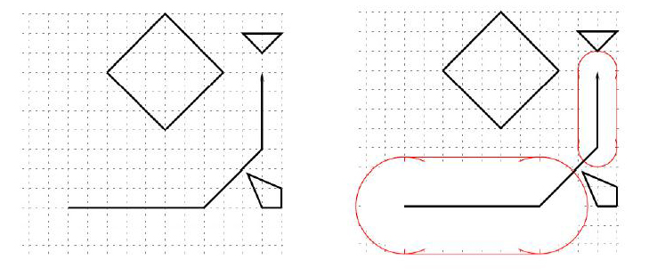

Home Page
F.A.Qs
Statistical Charts
Past Contests
Scheduled Contests
Award Contest
| Online Judge | Problem Set | Authors | Online Contests | User | ||||||
|---|---|---|---|---|---|---|---|---|---|---|
| Web Board Home Page F.A.Qs Statistical Charts | Current Contest Past Contests Scheduled Contests Award Contest | |||||||||
|
Language: Lapux the Floating Island
Description In the sub-tropical Pacific Ocean there is a country consisting of many islands. Its capital, Lapux, is a circular, floating island of radius R0 that always stays in the air at a fixed elevation through some magical application of magnetic forces.
There is a very short festival each year at the noon of the summer solstice, when the sun shines directly from above. At this time Lapux moves rapidly over the sea along some polygonal path, casting a shadow right beneath it. (Note: a polygonal path is a path consisting of several straight line segments.) The shadow is enlarged by a circular ring of artificial clouds surrounding Lapux serving some unknown practical and entertainment functions. Because of his predecessors' promise to the people and because of technical reasons, the benign dictator of Lapux always order the engineers to plan for a path and a cloud-controlling scheme such that
 You are to help the benign dictator of Lapux verifying that the path proposed by the engineers are indeed feasible, and to calculate the radius of the shadow at each segment of the path. In this problem, islands are represented as polygons, and the path of the center of Lapux as a polygonal line. You can safely assume that all islands are convex and that the path always stays on the sea and never touches any island (but may cross itself). Note thak a polygon P is convex if and only if the line segment joining any pair of points in P is completely contained in P. Consider the example above, where R0 = 10 and R1 = 50. The radius of the shadow can assume the minimum value of 50 during the first segment. During the second segment, the center passes (200, 240), which is only 7.07 <= R0 from the northwest corner of an island, and therefore is infeasible. The radius for the third segment is limited by the distance between the last stop and the southern tip of the triangular island, namely 20.0. Input The input consists of several test cases.
Each test case begins with a line of 2 real numbers and 1 integer - R0 the minimum radius, R1 the minimum radius, and n, 1 <= n <= 20 the number of islands. Each of the next n lines represents an island. The first number ni, 3 <= n <= 20 on a line gives the number of vertices of this island. The following ni, pairs of real numbers represent the x- and y- coordinates of the vertices around the island. The next line gives the path. The first number m, 2 <= m <= 20 gives the number of vertices of the path. The following m pairs of real numbers represent the x- and y-coordinates of the vertices along the path. The last test case is followed by a line consisting of three zeros. Every real number t in the input file has at most one digit after the decimal point and −9999.9 <= t <= 9999.9. Output Print the result of each test case on one line. For a test case with an mvertex path, print m − 1 integers, in order, each representing the desired radius (rounded to the decimal point) during that segment of flight. If the desired radius is impossible for a segment (less than R0), print '0' for that segment. Round all numbers to integers. Sample Input 10 50 3 3 220.0 360.0 240.0 380.0 200.0 380.0 4 205.0 235.0 240.0 220.0 240.0 200.0 220.0 200.0 4 60.0 340.0 120.0 280.0 180.0 340.0 120.0 400.0 4 20.0 200.0 160.0 200.0 220.0 260.0 220.0 340.0 0 0 0 Sample Output 50 0 20 Source |
[Submit] [Go Back] [Status] [Discuss]
All Rights Reserved 2003-2013 Ying Fuchen,Xu Pengcheng,Xie Di
Any problem, Please Contact Administrator